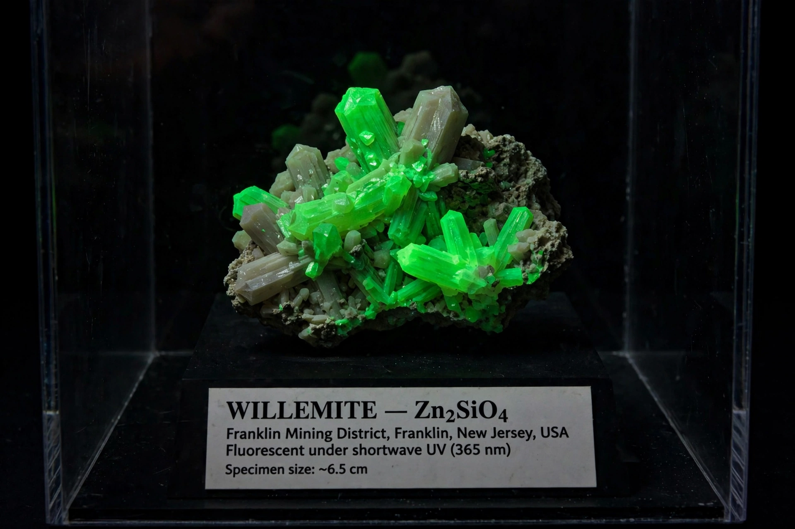

Fluorescence
From Wikipedia, the free encyclopedia

Fluorescence is the emission of light by a substance that has absorbed light or other electromagnetic radiation — a form of Luminescence in which the emission occurs almost instantaneously (within nanoseconds) and stops when the excitation stops, distinguishing it from the lingering glow of Phosphorescence. Named by George Gabriel Stokes in 1852 after the mineral fluorite, fluorescence underlies technologies from fluorescent lamps and highlighters to green fluorescent protein imaging in biology and forensic analysis.
Mechanism
Absorption lifts a molecule to an excited electronic state; some energy is lost as vibration (heat) before the electron falls back, so the emitted photon has less energy — a longer wavelength — than the absorbed one. This red-shift (the Stokes shift) lets instruments separate faint fluorescence from bright excitation light with filters, the basis of fluorescence microscopy's extraordinary sensitivity.
Applications
Fluorescent dyes and proteins (GFP from the jellyfish Aequorea victoria, Nobel 2008) tag molecules in living cells; flow cytometry and DNA sequencing read fluorescence barcodes by the millions; banknotes, detergents (optical brighteners) and safety clothing exploit it; minerals such as fluorite, calcite and willemite glow in museum UV displays, and scorpions fluoresce blue-green under moonlight wavelengths — for reasons still debated.